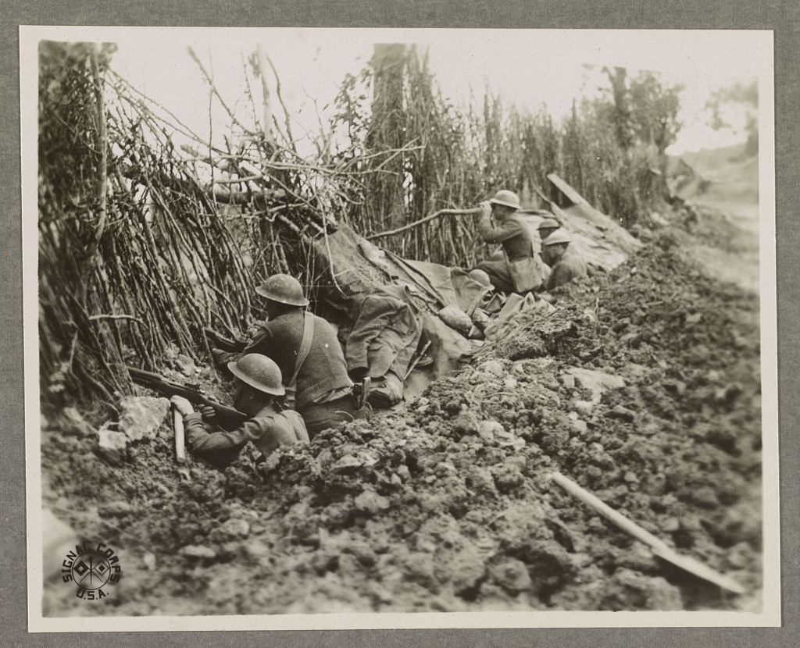
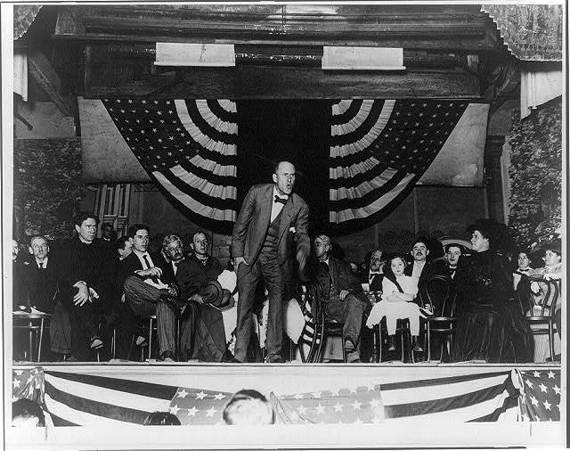
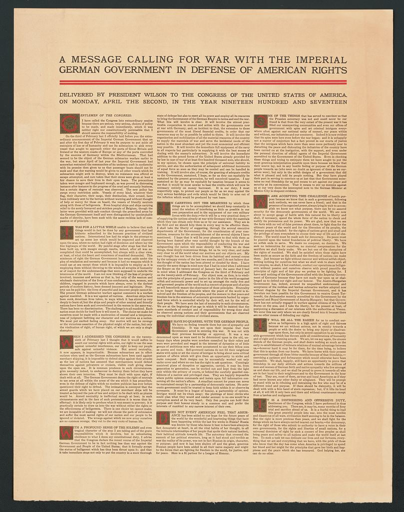
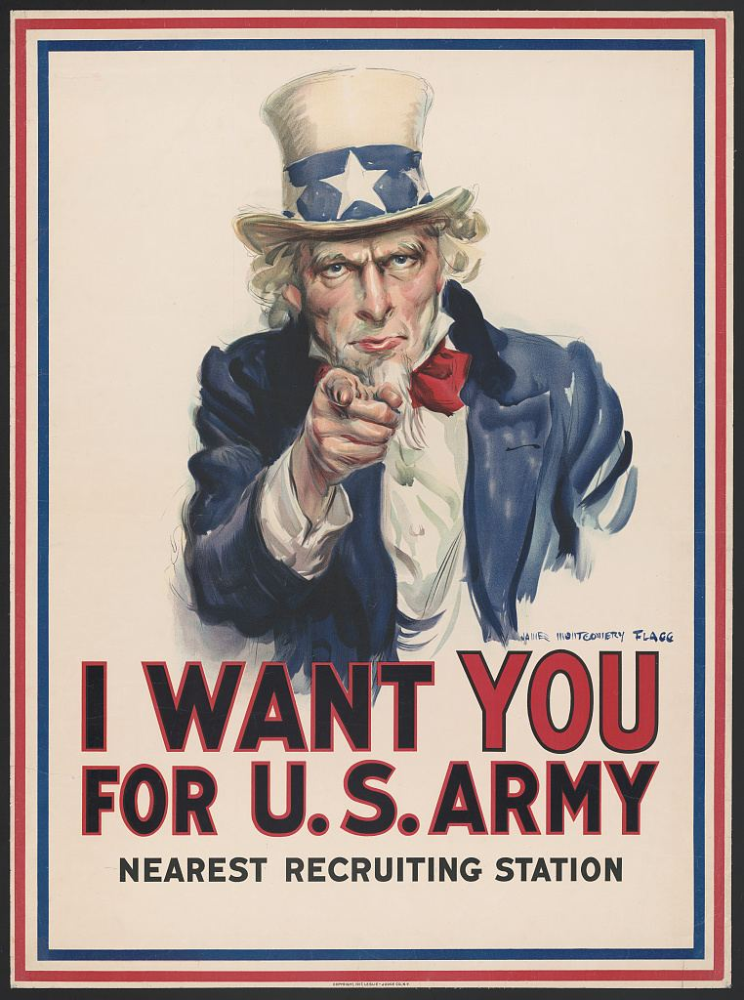
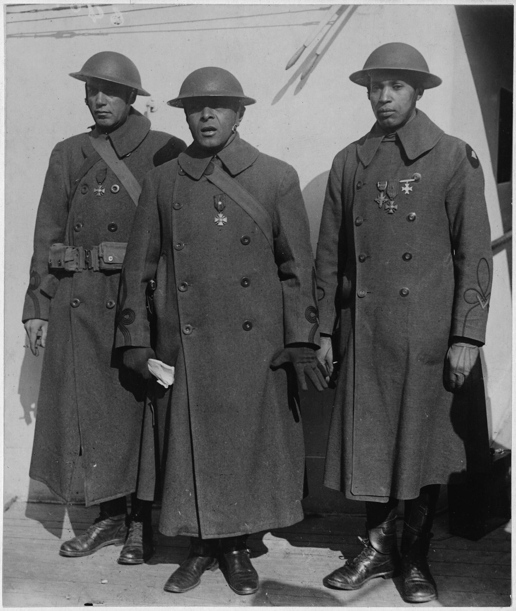
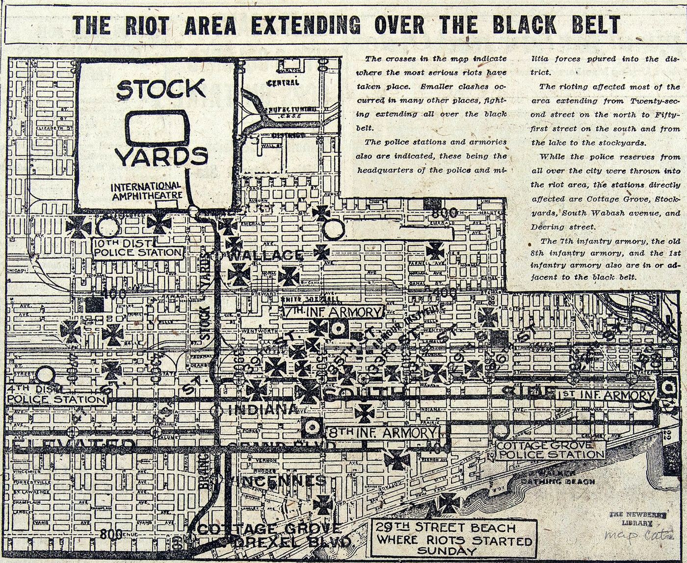
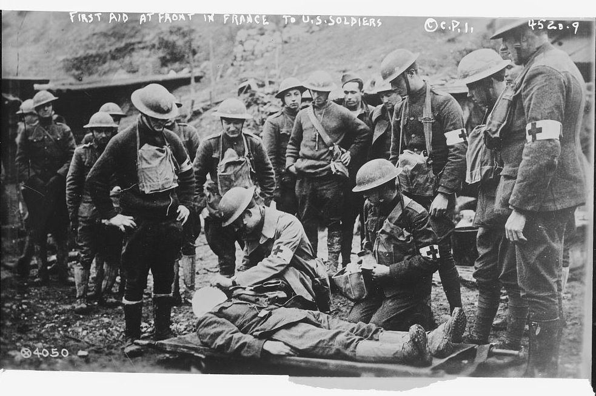
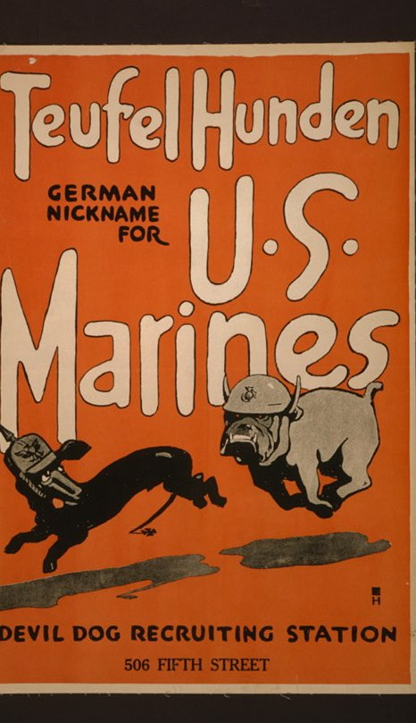
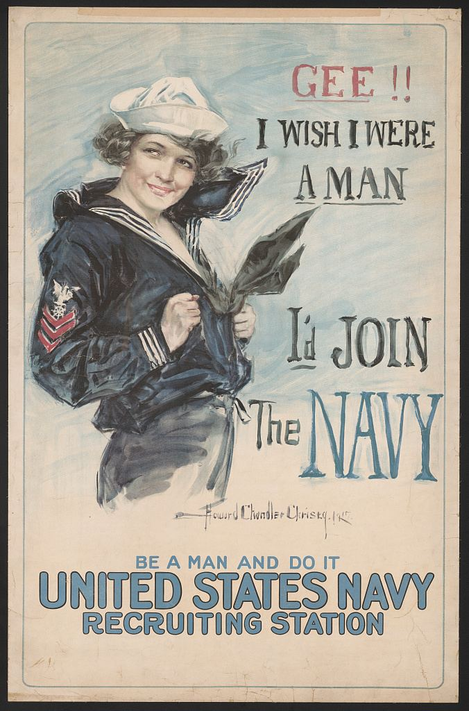
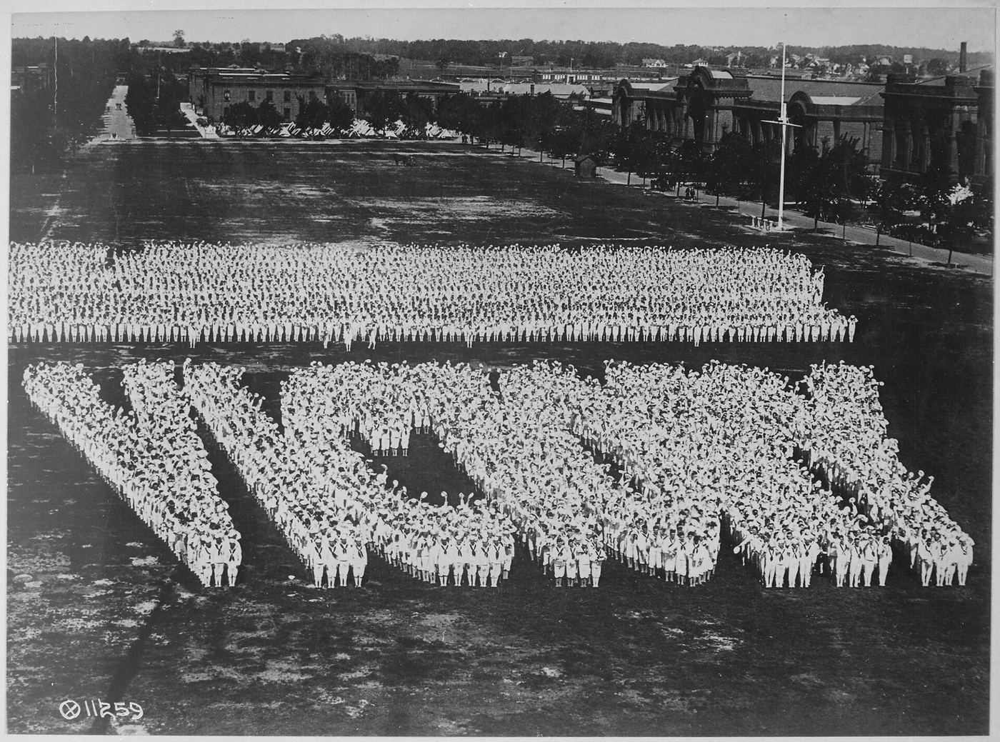

Make the World Safe for Democracy
The First World War and its home front, 1914–1920
Can a nation fight for democracy overseas and limit it at home?
In 1918, an American soldier crouched in a muddy trench in France, peering through the eyepieces of a gas mask at a ruined landscape of barbed wire and shell craters — while back home, in the country that had sent him, a man was sentenced to ten years in prison for the crime of giving a speech against the war.
The soldier had been told he was fighting to make the world safe for democracy. The man in prison — Eugene Debs, the labor leader you met in Unit 3, who had run for president as a socialist — had simply stood up and argued, in a public speech, that the war was a rich man's war fought by poor men's sons, and that young men should resist the draft. For saying so, he was prosecuted under a new federal law, convicted, and sentenced to a decade behind bars. He would run for president once more, in 1920, from his prison cell, and receive nearly a million votes. Here, in a single pairing, is the great contradiction of America's First World War: a nation that crossed an ocean to fight for democracy, and that jailed its own citizens at home for speaking freely about it. The promise was to make the world safe for democracy. The practice included crushing democracy's most basic freedom — the freedom to dissent — within America's own borders, and abandoning, at home and abroad, the very ideals the war was fought to defend.

This final chapter of the unit follows the United States into the catastrophe of the First World War, and it is the bitter climax of the whole story of empire and ideals. We will trace how America was drawn into the war, the noble crusade it proclaimed, the dissent it suppressed, the Black Americans who fought for a democracy that denied them, and the disillusioned, violent peace that followed. It is a chapter where the gap between promise and practice grows so wide that the nation seems almost to split in two — and where, in the streets of Chicago in the summer of 1919, the contradiction explodes into open violence.
From neutrality to the trenches
When war erupted in Europe in 1914 — a continent-wide catastrophe of industrialized slaughter that would kill millions — most Americans wanted no part of it. President Woodrow Wilson urged the country to remain neutral, and for nearly three years it did. The war in Europe was a horror beyond imagining: men by the hundreds of thousands fed into the meat grinder of trench warfare, machine guns and poison gas and artillery turning whole landscapes into wastelands of mud and death, all for a few yards of ground. From across the ocean, it looked like a European madness America was wise to avoid.
From neutrality to the trenches
But neutrality slowly eroded. German submarines waged war on the shipping lanes, and when a German U-boat sank the British passenger liner Lusitania, killing nearly 1,200 people including more than a hundred Americans, public opinion began to turn. Germany's resumption of unrestricted submarine warfare, sinking ships without warning, pushed it further. The final straw was the Zimmermann Telegram — an intercepted secret message in which Germany proposed that Mexico join the war against the United States, with the promise of regaining territory it had lost in the Mexican War. Outraged, and persuaded by Wilson that the war had become a fight for democracy and a just world order, the United States declared war on Germany in April 1917. American troops — the "doughboys" — poured into France, fresh and numerous when the European armies were exhausted and bled white, and their arrival helped tip the balance toward victory. By November 1918, Germany surrendered, and the guns at last fell silent. America had fought its first great war on the world stage, and on the winning side.

The war against dissent at home
But winning the war abroad came at a cost to freedom at home, and that cost is the heart of this chapter. To mobilize the country, the Wilson government launched a vast propaganda campaign to whip up enthusiasm and hatred of the enemy — and alongside it, a fierce crackdown on anyone who questioned the war. Congress passed the Espionage Act and the Sedition Act, sweeping laws that made it a crime not just to spy or sabotage, but, in effect, to speak against the war, the draft, or the government. Thousands of Americans were arrested, fined, and imprisoned for the content of their speech — for antiwar pamphlets, for socialist organizing, for criticizing the war effort in public. Eugene Debs, as you saw, went to prison for a speech.

The war against dissent at home
The Supreme Court blessed the crackdown. In the 1919 case Schenck v. United States, the Court upheld the conviction of a man who had distributed leaflets urging resistance to the draft, ruling that speech could be punished when it created a "clear and present danger" — and famously comparing antiwar leaflets to "falsely shouting fire in a theater." The principle would be debated for the rest of the century, but in the moment it meant that the First Amendment's promise of free speech bent and nearly broke under the pressure of war. And the repression did not end with the fighting. As the war wound down, a wave of fear of foreign radicals and revolutionaries — fueled by a real revolution that had just brought communists to power in Russia — swept the country into the first "Red Scare," a frenzy of raids, arrests, and deportations of suspected radicals, immigrants, and dissenters, often with little regard for their actual rights. A nation that had gone to war for democracy was, at home, jailing dissenters, deporting immigrants, and treating free speech as a danger to be suppressed. The promise and the practice had rarely stood farther apart.
Can a Democracy Jail Its Dissenters?
The wartime suppression of speech raises one of the hardest questions a free society faces: in a crisis, can a democracy imprison people for what they say without ceasing to be a democracy?
The case for wartime limits. Defenders argued that in a war for national survival, speech that undermined the draft or the war effort was genuinely dangerous — that a nation fighting for its life could not allow its citizens to sabotage the effort with words, any more than with weapons. The "clear and present danger" test tried to draw a line.
The case against. Critics then and now argue that the whole point of free speech is to protect unpopular speech, especially criticism of the government, and especially in wartime, when the pressure to silence dissent is greatest. If the First Amendment can be suspended whenever officials declare an emergency, it protects nothing when it matters most. Debs went to prison not for sabotage but for an opinion.
Your turn. Where should the line fall between dangerous action and protected speech? Is "clear and present danger" a sensible limit or a loophole big enough to swallow the freedom it claims to protect? Notice the deepest irony: this happened in a war fought, supposedly, for democracy. Can a nation defend democracy abroad while suspending it at home — and if it must choose, which is the real thing?
Ready to practice? Open the Chapter 5 assignment →
Illinois: democracy's war, and Chicago's summer of blood
No place reveals the bitter contradiction of this war more sharply than Chicago, and no story captures it better than that of the Black soldiers who fought it. You have followed the 8th Illinois — the all-Black "Fighting Eighth" — since it marched to Cuba in 1898. In the World War, it was federalized and redesignated the 370th U.S. Infantry, and it remained the only American combat regiment officered entirely by Black men. Sent to France and placed under French command, the 370th fought with such distinction in the war's final campaigns that its men earned a shower of decorations — dozens of the French Croix de Guerre, multiple American Distinguished Service Crosses — and a fearsome reputation; the Germans, it was said, called such Black American troops "Black Devils." They returned to Chicago in 1919 as heroes, marching in triumph through the city that had sent them, having fought for the democracy their president proclaimed.

Illinois: democracy's war, and Chicago's summer of blood
And then, that same summer, Chicago tried to murder them at home. The summer of 1919 became known as the "Red Summer," when white mobs attacked Black communities in cities across the country — and one of the worst explosions was in Chicago. The Great Migration had brought tens of thousands of Black Southerners to Chicago for the wartime factory jobs (a movement this book will follow into the next units), and white resentment over jobs, housing, and the mere presence of a growing Black community had been building toward violence. It erupted at a Lake Michigan beach in July 1919, when a Black teenager who had drifted across an invisible racial line in the water was stoned and drowned, and the police refused to act. Chicago exploded into nearly two weeks of racial violence: white mobs and Black residents clashed in the streets, homes were burned, and dozens of people — most of them Black — were killed, with hundreds injured and thousands left homeless. The Black veterans of the 370th, who had crossed an ocean to fight for democracy and come home decorated heroes, now found themselves and their families under attack in their own city, and some took up arms to defend their neighborhoods. The meaning was impossible to miss, and Black Americans drew it sharply: they had been asked to make the world safe for a democracy that would not keep them safe on a Chicago beach. The promise of the war and its practice for Black Americans had collided, in blood, on the South Side of Chicago.

The War’s Promise and Its Delivery
Black Americans served in the First World War in large numbers, often hoping that proving their loyalty and courage would finally win them full citizenship. Weigh the war's promise against what it actually delivered for them.
The promise and the hope. W.E.B. Du Bois urged Black Americans to "close ranks" and support the war, believing that their service in a war for democracy would make their claim to equality undeniable. Black soldiers fought bravely; units like the 370th earned high honors. The logic was powerful: how could a nation deny full citizenship to men who had bled for it?
The delivery. They came home to the Red Summer — to lynchings, to race riots, to renewed Jim Crow. Black veterans were attacked, some still in uniform. The democracy they had fought for abroad was, if anything, more violently denied them at home. The hoped-for reward for loyal service did not come.
Your turn. What does it reveal that Black soldiers fought for democracy abroad and were met with mob violence at home? Was Du Bois right to urge support for the war, or did the bitter aftermath prove the strategy of "earning" rights through service a false hope? Consider how this echoes a debate from the last unit — Washington versus Du Bois, patience versus protest. After 1919, which path did the evidence seem to favor? And how might that disillusionment shape what Black Americans demanded next?
The peace that wasn't
There was one final betrayal, and it was Wilson's own. The president had framed the entire war as a crusade for a better world, and he came to the peace conference with a soaring vision: his "Fourteen Points," a blueprint for a just and lasting peace, crowned by a League of Nations — an international organization where countries would settle disputes through cooperation rather than slaughter, so that the world would never again descend into such a catastrophe. It was an idealistic and, in many ways, a noble idea, the seed of the international institutions that would come later in the century.
The peace that wasn't
And the United States Senate rejected it. After all the death, after all the lofty rhetoric about making the world safe for democracy, the country that had championed the League refused to join it. Many senators feared that membership would entangle the United States in future foreign wars and surrender American freedom of action; the old warning against "permanent alliances," echoing all the way back to Washington's Farewell Address, still had force. Wilson, having suffered a stroke while campaigning desperately for the League, could not save it. So the great war for democracy ended in disillusionment all around: the world was not made safe; dissenters had been jailed; Black veterans had been attacked; and the noble peace the president had promised was rejected by his own country. The United States turned away from the wreckage, exhausted and cynical, wanting only to forget the whole bloody business and get on with making money. The idealism had curdled. The crusade was over, and it had not delivered.
This is where the unit ends, and the gap between promise and practice has perhaps never yawned wider in this book. The promise was the most idealistic America had ever proclaimed: to make the world itself safe for democracy. The practice was a war that suppressed democracy at home through the jailing of dissenters and the deportation of radicals, that met its returning Black heroes with mob violence in the streets of Chicago, and that ended with the nation rejecting the very peace its president had championed. America fought for democracy abroad and wounded it at home, fought for a better world and then abandoned the effort to build one.

And yet, as always, notice who kept faith with the promise even as the country broke it. The dissenters who went to prison rather than stay silent were defending the free speech America claimed to cherish. The Black soldiers of the 370th who fought in France and then defended their families in Chicago were holding America to a democracy it would not extend to them. The truest believers in America's promise, once again, were the very people America was casting out. That pattern has now run through four units, and it is about to carry forward into a decade unlike any before it.
For the war's end did not bring peace of mind. It brought a great national turning-away — from idealism, from the rest of the world, from the hard questions the war had raised. A disillusioned, weary, cynical America turned inward, toward pleasure and profit, jazz and the stock market, a roaring good time meant to drown out everything the war had revealed. The Roaring Twenties were about to begin. They would be loud, and rich, and reckless — and they would end in the greatest economic catastrophe in the nation's history. That story begins the next unit.
Break the big words apart
Long words are built from smaller parts. Learn the parts and you can figure out words you have never seen.
neutrality
So it means: The state of taking neither side.
En español: neutralidadSame family: neutral · neutron
propaganda
So it means: Messages spread to make people think or feel a certain way.
En español: propagandaSame family: propagate
espionage
So it means: The act of spying.
En español: espionajeSame family: spy · espy
Vocabulary
Author's note. I have given the last word of this unit, again and again, to the people the country betrayed — the jailed dissenter, the attacked Black veteran — and I want to explain why. It would be easy to read these chapters as simple anti-American history, a catalog of crimes. That is not what they are. The standard I am holding America to in every one of them is America's own — the Declaration's promise of consent and equality, the Constitution's promise of free speech, the war's own promise of democracy. The gap hurts precisely because the ideals are so high. A country with no ideals cannot be a hypocrite. The United States can be, and often was — but the same ideals that make the hypocrisy possible are also what generations of Americans, the truest believers, have used to drag the country, slowly and against its will, closer to its word. That is the story this book is telling. The next unit continues it.
Investigations and practice
Do the assignment, then open a deep dive.



Use the arrows, the dots, or the ← → keys on your keyboard. On a tablet, swipe.